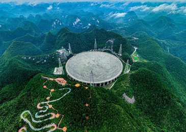

新闻动态/Dynamic
- 
-
中国天眼发现脉冲星辐射新形态矮脉冲族群
国际科学期刊《自然·天文》发表了中国科学院国家天文台韩金林研究员领导的王绶琯巡天突击队的新成果 ，揭示了脉冲星辐射濒临熄灭时，其磁层结构基本不变的物理事实。
- 2022-11-11 科学的获取90%依赖设备，中国进入加速追赶期
- 2023-06-27 海拔4526米，全国首座“零海拔天文观测站”交付
- 2021-07-07 霍金黑洞面积定理首次获观测证实
- 2019-04-11 首张黑洞照片参与者：我们在盯着这些东西
- 2021-05-20 “中国天眼”新发现201颗脉冲星


夜空中国/NightChina
天文大家/Introduce
南仁东，男，满族，吉林辽源人，中国天文学家、中国科学院国家天文台研究员，人民科学家。 曾任FAST工程首席科学家兼总工程师，主要研究领域为射电天体物理和射电天文技术与方法，负责国家重大科技基础设施500米口径球面射电望远镜(FAST)的科学技术工作。 2017年5月，获得全国创新争先奖； 2017年7月，入选为2017年中国科学院院士增选初步候选人。 【详情】